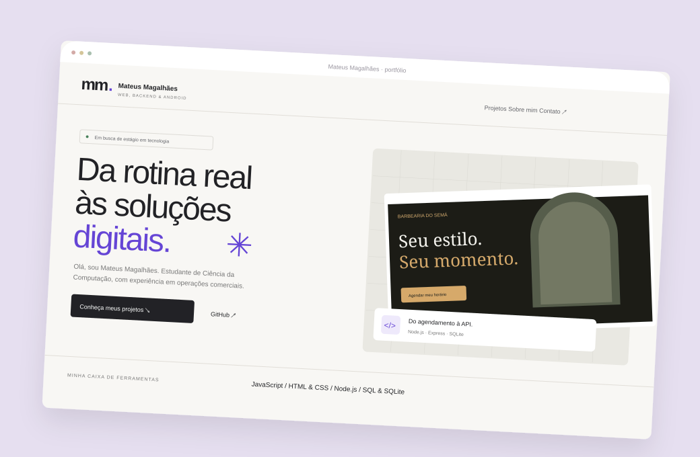

Barbearia do Semá
Uma agenda com regras de verdade: duração dos serviços, horários disponíveis e gestão de reservas em um só lugar.
104 testes na revisão técnica de outubro de 2026
Em busca de estágio em tecnologia
Olá, sou Mateus William. Estudante de Ciência da Computação, com experiência em operações comerciais e vontade de transformar problemas do dia a dia em software.
01 PROJETOS SELECIONADOS
O que cada projeto resolve,
como foi construído e até onde vai.
Uma agenda com regras de verdade: duração dos serviços, horários disponíveis e gestão de reservas em um só lugar.

Um experimento para organizar demandas, acompanhar status e encontrar o que precisa de atenção.

Uma apresentação direta para recrutadores, com estudos de caso, navegação acessível e uma base simples de manter.
02 SOBRE MIM
Minha experiência começou com pessoas e processos. É essa perspectiva que levo para a tecnologia.
Na Gontijo, trabalho com operações comerciais e administrativas: agências credenciadas, controles em planilhas, terminais PinPad e apoio às equipes. Também crio materiais de comunicação no CorelDRAW e atuo na automatização de processos.
Hoje curso Ciência da Computação e direciono meus estudos para desenvolvimento web e backend. Procuro uma oportunidade de estágio para contribuir, receber feedback e evoluir com uma equipe.
Baixar meu currículo em PDFFORMAÇÃO & EXPERIÊNCIA
Bacharelado · Uniamérica
Conclusão prevista em 2029.
Gontijo · Operações, controles e atendimento a agentes.
Gontijo · Autonomia no atendimento e suporte a colegas. Consulta de localização de ônibus pelo SASCAR.
Formação técnica · SENAI Horto.
03 CONHECIMENTOS EM PRÁTICA
Tecnologias aplicadas nos projetos.
Aprendizado contínuo, sem níveis inventados.
HTML, CSS e JavaScript para estruturar conteúdo, adaptar layouts e cuidar das interações.
Neste portfólio e na Barbearia do SemáNode.js, Express, APIs REST, SQL e SQLite para regras de negócio e persistência.
No sistema de agendamentoGitHub, ESLint e testes com Playwright para revisar mudanças e conferir comportamentos.
Revisão técnica e validação dos projetos04 VAMOS CONVERSAR
Aberto a oportunidades de estágioBusco estágio em desenvolvimento web ou backend.
Vamos conversar sobre a sua equipe?